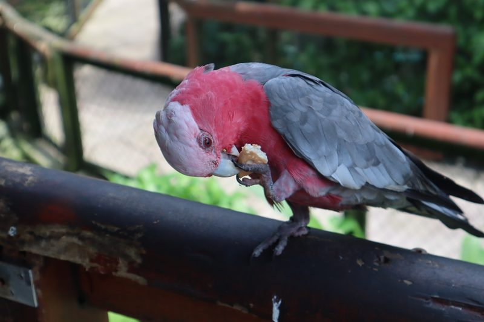
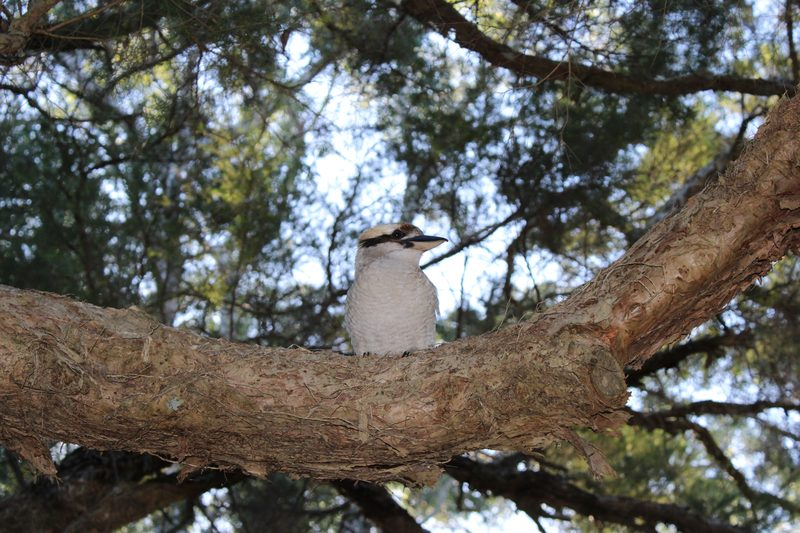
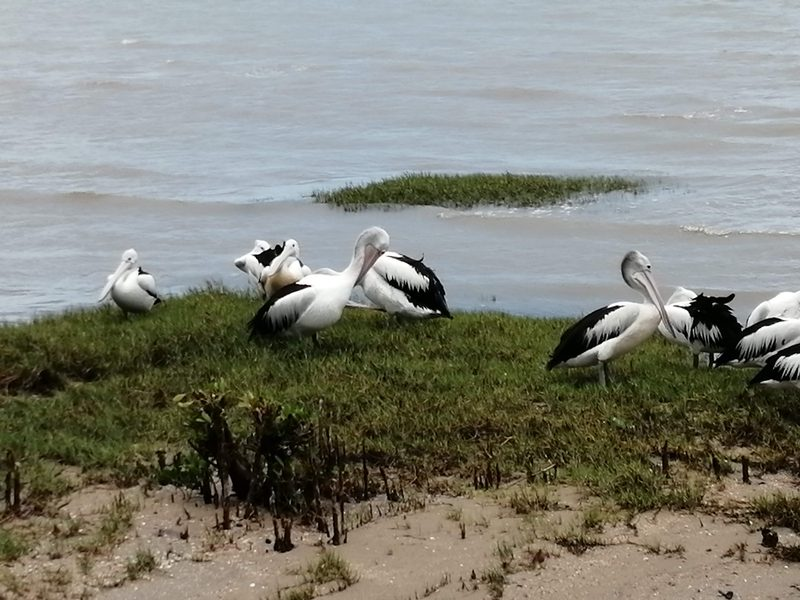
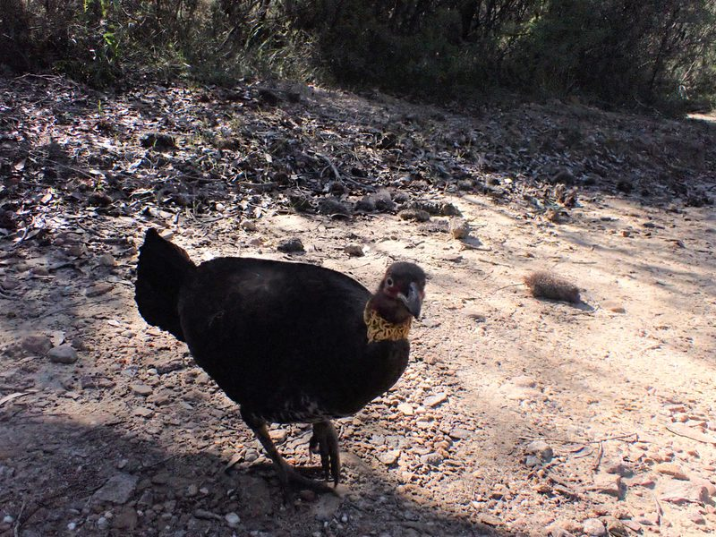
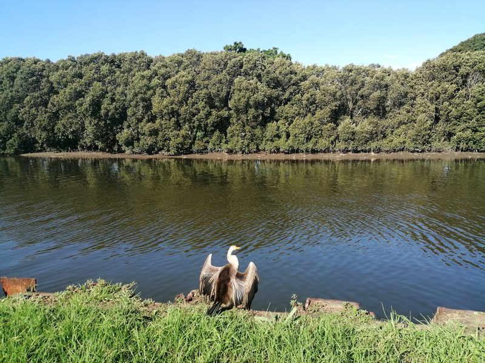
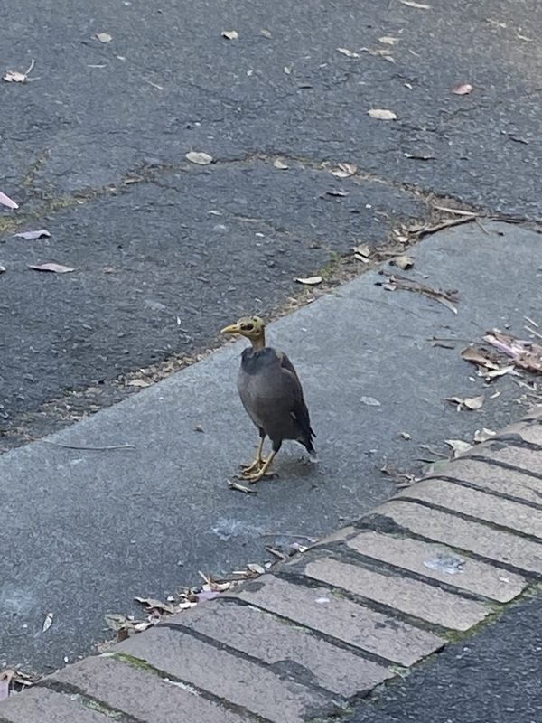
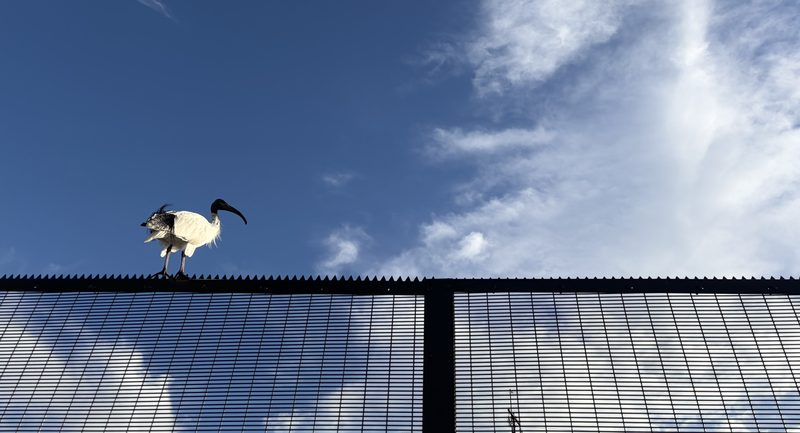

Things I Like
Judo
Coffee

I love filter coffee, particularly the V60 method. Here are some of my favourite places:
- Haven — Haymarket
- Edition Roasters — Haymarket
- The Q on Harris — Ultimo
- Cafe Kappucino — Ultimo
- Solstice — Summer Hill
- Deluca — Marrickville
- ONA Coffee — Marrickville
- Warren & Holt — Marrickville
- Algorithm — Marrickville
- Double Roasters — Marrickville
- Roastville — Marrickville
- Primary Coffee — Marrickville
- Shenkin — Erskineville
- Brighter — Stanmore
- Da Bang — Surry Hills
- Jibbi — Surry Hills
Birds
I also love birds.






